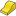

Arch Site |
| Menu location |
|---|
| Arch → Site |
| Workbenches |
| Arch |
| Default shortcut |
| S I |
| See also |
| Arch Floor, Arch Building |
{kind=link}
Description
The Arch Site is a special object that combines properties of a standard FreeCAD group object and Arch objects. It is particularly suited for representing a whole project site, or terrain. In IFC-based architectural work, it is mostly used to organize your model, by containing building objects. The site is also used to manage and display a physical terrain, and can computes volumes of earth to be added or removed.
How to use
- Optionally, select one or more objects to be included in your new site
- Press the  Arch Site button, or press the S then I keys
Options
- After creating a site, you can add more objects to it by drag and dropping them in the Tree View or by using the
 Arch Add tool. This only determines which object is part of the given site, and has no effect on the terrain itself.
Arch Add tool. This only determines which object is part of the given site, and has no effect on the terrain itself. - You can remove objects from a site by drag and dropping them out of it the Tree View or by using the
 Arch Remove tool
Arch Remove tool - You can add a terrain object by editing the Site's Terrain property. The terrain must be an open shell or surface.
- You can add volumes to be added or subtracted from the base terrain, by double-clicking the Site, and adding objects to its Subtractions or Additions groups. The objects must be solids.
- The Extrusion Vector property can be used to solve some problems that can appear when working with subtractions and additions. In order to perform those additions/subtractions, the terrain surface is extruded into a solid, which is then appropriately unioned/subtracted. Depending on the terrain topology, this extrusion might fail with the default extrusion vector. You might therefore be able to remedy the problem by changing this to a different value.
Properties
- DATATerrain: The base terrain of this site
- DATAAddress: The street and housenumber of this site
- DATAPostal Code: The postal or zip code of this site
- DATACity: The city of this site
- DATACountry: The country of this site
- DATALatitude: The latitude of this site
- DATALongitude: The longitude of this site
- DATAUrl: An url that shows this site in a mapping website
- DATAProjected Area: The area of the projection of this object onto the XY plane
- DATAPerimeter: The perimeter length of this terrain
- DATAAddition Volume: The volume of earth to be added to this terrain
- DATASubtraction Volume: The volume of earth to be removed from this terrain
- DATAExtrusion Vector: An extrusion vector to use when performing boolean operations
- DATARemove Splitter: Remove splitters from the resulting shape
- DATANorth Deviation: The angle between the true North and the north direction in this document
- VIEWSolar Diagram: Shows or hides the solar diagram
- VIEWSolar Diagram Color: The color of the solar diagram
- VIEWSolar Diagram Position: The position of the solar diagram
- VIEWSolar Diagram Scale: The scale of the solar diagram
Typical workflow
Start by creating an object that represents your terrain. It must be an open surface, not a solid. For example, it is easy to import mesh data, that can be turned into a Part Shape from menu Part -> Create Shape from Mesh.... Then, create a Site object, and set its Terrain property to the Part we just created:
{kind=link}
Create some volumes (they must be solids) that represent the areas that you wish to be excavated or filled. Double-click the Site object in the Tree View, and add these volumes to the Additions or Subtractions groups. Click OK.
{kind=link}
The site geometry will be recomputed and the areas, perimeter, and volumes properties recalculated.
{kind=link}
Solar diagram
If pysolar is installed on your system, Arch Sites can display a solar diagram. For this, Longitude, Latitude and NorthDeviation properties must be correctly set, and SolarDiagram view property turned on. available in version 0.17
{kind=link}
Scripting
The Site tool can by used in macros and from the python console by using the following function:
makeSite ([objectslist])
creates a site including the objects from the given list.
Example:
import Arch Arch.makeSite()
A solar diagram can also be created with:
import Arch,FreeCADGui node = Arch.makeSolarDiagram(-46.38,-23.33) # longitude, latitude, [scale] FreeCADGui.ActiveDocument.ActiveView.getSceneGraph().addChild(node)